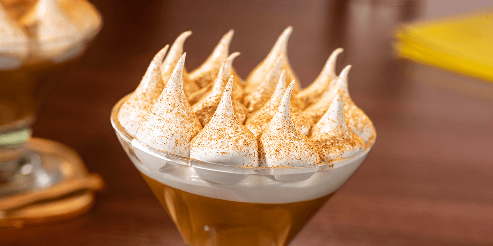

Suspiro a la limeña

Description
A dessert with 200 years of history, it was once
called "Manjar Real del Peru". However,
Jose Galvez Barrenechea, a writer and poet, gave it
its current name, for how it reminded him of the softness
and sweetness of a woman's sight.
It's considered one of the most important
desserts in Peru due to how it's taste manages to captivate
people from diferent countries and ages all alike.
Ingredients
- 1 (14 ounce) can sweetened condensed milk
- 1 (12 fluid ounce) can evaporated milk
- 1 tablespoon vanilla extract
- 2 beaten egg yolks
- 2 beaten egg white
- 1 cup confectioners' sugar
- ¼ teaspoon ground cinnamon (Optional)
Steps
- Whisk together sweetened condensed milk, evaporated milk, vanilla, and egg yolks in a saucepan. Place over medium-low heat and gently cook until the mixture thickens, stirring constantly with a wooden spoon, about 30 minutes. Pour into a heatproof serving dish and set aside.
- Whip egg whites with confectioners' sugar to stiff peaks. Spread meringue on top of milk mixture. Refrigerate until cold, about 3 hours. Sprinkle with cinnamon before serving.